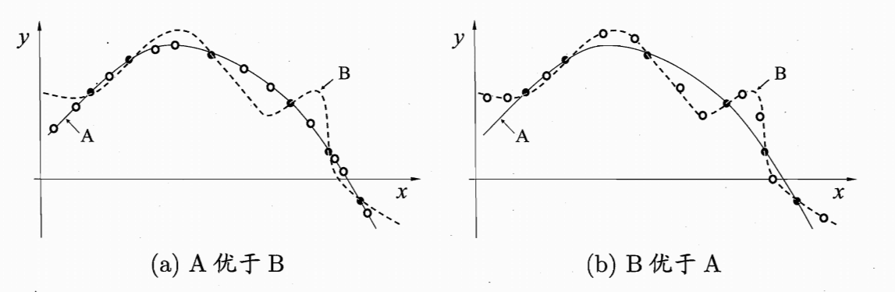

西瓜书绪论
第一章主要是引入机器学习的背景，给出基础的术语。
引言
机器学习是什么？在人的认识中，通常是根据先前的经验，加上这次的现象来推测结果，如西瓜书🍉中喜欢举的例子，我们以往的经验表明色泽青绿、根蒂蜷缩、敲声浊响的一般是好瓜，借这个经验我们可以来判断当前手里的瓜好不好。但如果希望计算机也能有这个能力的话，那么经验对于的就是数据，而这个判断按过程对于的就是我们的学习模型。
基本术语
- data set：数据集，即一系列的样本的数据，如（色泽=浅白；根蒂=硬挺；敲声=浊响），（色泽=乌黑；根蒂=硬挺；敲声=浊响）….
- sample：样本，上面数据集中一个（）内的内容即是一个样本的数据
- feature：特征，如第一个样本的特征有浅白，硬挺，浊响
- feature vector：特征空间，一个样本的所有特征可以组成一个特征向量，向量所在的空间可以是特征空间
- label：一个样本的结果是它的标记
supervised learning(有label)
- classification：分类，预测的是离散值，如“好瓜”，“坏瓜”
- binary classification：二分类，只有两个类别，为positive class和negative class
- multi-class classification：多分类
- regression：回归，预测的是连续值，如结果为[0,1]的值
- classification：分类，预测的是离散值，如“好瓜”，“坏瓜”
unsupervised learning(无label)
- clustering：聚类，分类标准不是事前设定的，是一个训练的结果
- generalization：泛化能力，模式适用于“新样本”的能力。通常来讲我们都是从所有的数据中抽取一部分来训练，我们这里的抽取是独立同分布的，一般来说，抽取的越多我们模型的泛化能力也越强
假设空间
在西瓜🍉的这个例子中，我们如果只有三个特征，即色泽，根蒂和敲声，而又假设每个特征只有三个取值空间，那么如果我们期待从已有的数据中得到“好瓜”的判断逻辑表达式的话，只需要在27个中做选取，并且这27个中可能不止一个满足我们training test中的数据，之后将考虑如何从候选的表达中选取最好的一个。
归纳偏好
承接上面的问题，如何选择？任何一个有效的机器学习算法必有其归纳偏好，否则它将被假设空间中看似在训练集上“等效”的假设所迷惑。这个有一个常用的判断价值观，即“奥卡姆剃刀”：“若有多个假设与观察一致，则选最简单的那个”，在图像中可能就是更平滑的曲线。但这个理论绝不是一定的，如下图所示：
在不同的情况下，他们的优劣并不明显显示，由没有免费的午餐理论（NFL，证明这里略过，见P9），即无论学习算法聪明/笨拙，他们的期望是一样的，和随机差不多，但这里的前提是“所有”问题出现的概率是相同，实际情况中，我们只用关注于特定的问题，因此这个结论并没有那么致命。它更重要的是告诉我们，针对一个具体任务，要具体的选择解决方案
习题
1.2 在我前面文章的基础上，这里就是27×26×….×（27-k+1）
1.3 关注正确的百分率，偏好是能符合更多样本的更平滑的曲线
后续扩展
- “没有免费的午餐的证明”